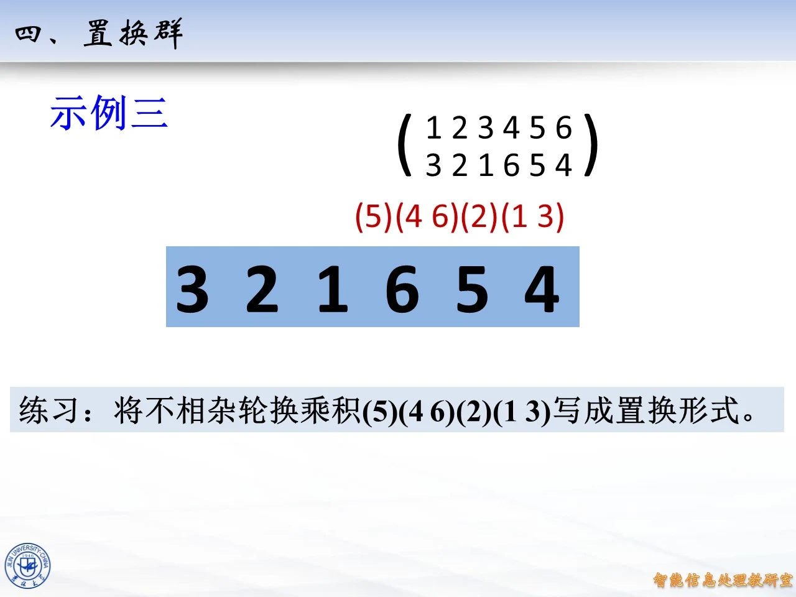
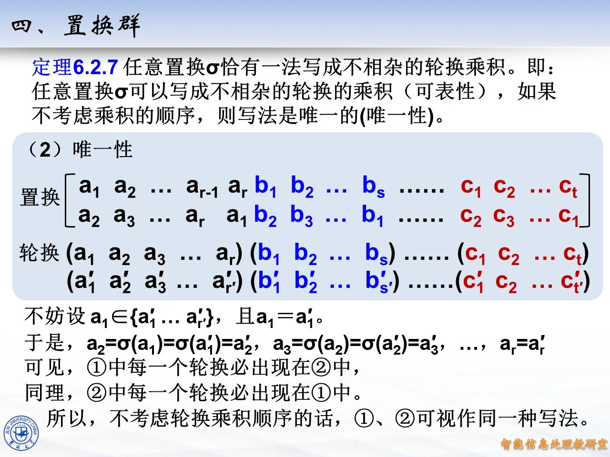

本讲属于第八章置换群部分，核心是定理 6.2.7：任意置换都能写成不相杂（两两无公共元素）轮换的乘积，并且在忽略乘积顺序的意义下这种写法唯一。课件同一内容被三次录制收录（页码 94 至 99、125 至 188、435 至 497），本讲解按页码升序组织：先用例 24 中四个元素的全体置换建立直观，再完整走一遍可表性与唯一性的证明，最后回到思考填空题；三次录制内容一致，后两处录制以互见方式说明，不再重复展开。

课件原图 · 10月26日授课 · 第 418 页 查看前后已收录原页 → 例 24：把 S 4 S_4 S 4
◆ p.94-99 ｜例 24
题目：设 M = { 1 , 2 , 3 , 4 } M=\{1,2,3,4\} M = { 1 , 2 , 3 , 4 } M M M
恒等置换：I I I
6 个对换：( 1 2 ) , ( 1 3 ) , ( 1 4 ) , ( 2 3 ) , ( 2 4 ) , ( 3 4 ) (1\,2),\ (1\,3),\ (1\,4),\ (2\,3),\ (2\,4),\ (3\,4) ( 1 2 ) , ( 1 3 ) , ( 1 4 ) , ( 2 3 ) , ( 2 4 ) , ( 3 4 )
8 个 3 轮换：( 1 2 3 ) , ( 1 3 2 ) , ( 1 2 4 ) , ( 1 4 2 ) , ( 1 3 4 ) , ( 1 4 3 ) , ( 2 3 4 ) , ( 2 4 3 ) (1\,2\,3),\ (1\,3\,2),\ (1\,2\,4),\ (1\,4\,2),\ (1\,3\,4),\ (1\,4\,3),\ (2\,3\,4),\ (2\,4\,3) ( 1 2 3 ) , ( 1 3 2 ) , ( 1 2 4 ) , ( 1 4 2 ) , ( 1 3 4 ) , ( 1 4 3 ) , ( 2 3 4 ) , ( 2 4 3 )
6 个 4 轮换：( 1 2 3 4 ) , ( 1 2 4 3 ) , ( 1 3 2 4 ) , ( 1 3 4 2 ) , ( 1 4 2 3 ) , ( 1 4 3 2 ) (1\,2\,3\,4),\ (1\,2\,4\,3),\ (1\,3\,2\,4),\ (1\,3\,4\,2),\ (1\,4\,2\,3),\ (1\,4\,3\,2) ( 1 2 3 4 ) , ( 1 2 4 3 ) , ( 1 3 2 4 ) , ( 1 3 4 2 ) , ( 1 4 2 3 ) , ( 1 4 3 2 )
3 个不相交对换之积：( 1 2 ) ( 3 4 ) , ( 1 3 ) ( 2 4 ) , ( 1 4 ) ( 2 3 ) (1\,2)(3\,4),\ (1\,3)(2\,4),\ (1\,4)(2\,3) ( 1 2 ) ( 3 4 ) , ( 1 3 ) ( 2 4 ) , ( 1 4 ) ( 2 3 )
思路：4 ! = 24 4!=24 4 ! = 24 M M M
分类演算：
恒等置换 I I I ( 1 ) ( 2 ) ( 3 ) ( 4 ) (1)(2)(3)(4) ( 1 ) ( 2 ) ( 3 ) ( 4 )
对换是长度为 2 的轮换，恰好移动 2 个元素、固定其余 2 个；从 4 个元素中选 2 个有 ( 4 2 ) = 6 \binom{4}{2}=6 ( 2 4 ) = 6
3 轮换：先选 3 个元素，有 ( 4 3 ) = 4 \binom{4}{3}=4 ( 3 4 ) = 4 3 ! 3 = 2 \frac{3!}{3}=2 3 3 ! = 2 ( a b c ) = ( b c a ) = ( c a b ) (a\,b\,c)=(b\,c\,a)=(c\,a\,b) ( a b c ) = ( b c a ) = ( c a b ) 4 × 2 = 8 4\times 2=8 4 × 2 = 8
4 轮换：4 个元素的轮换个数是 4 ! 4 = 6 \frac{4!}{4}=6 4 4 ! = 6 3 ! = 6 3!=6 3 ! = 6
两个不相交对换之积：把 4 个元素分成两对，分法为 1 2 ( 4 2 ) = 3 \frac{1}{2}\binom{4}{2}=3 2 1 ( 2 4 ) = 3 ( 12 ∣ 34 ) (12|34) ( 12∣34 ) ( 13 ∣ 24 ) (13|24) ( 13∣24 ) ( 14 ∣ 23 ) (14|23) ( 14∣23 )
合计 1 + 6 + 8 + 6 + 3 = 24 = 4 ! 1+6+8+6+3=24=4! 1 + 6 + 8 + 6 + 3 = 24 = 4 ! 4 ! 4! 4 !
拓展 （课件外补充）：课件这里省略了固定点——严格按定理应写 ( 1 2 3 ) = ( 1 2 3 ) ( 4 ) (1\,2\,3)=(1\,2\,3)(4) ( 1 2 3 ) = ( 1 2 3 ) ( 4 ) 1 + 1 + 1 + 1 1{+}1{+}1{+}1 1 + 1 + 1 + 1 2 + 1 + 1 2{+}1{+}1 2 + 1 + 1 3 + 1 3{+}1 3 + 1 4 4 4 2 + 2 2{+}2 2 + 2 S 4 S_4 S 4
定理 6.2.7 的陈述（第二次录制）
◆ p.125 ｜定理 6.2.7
定理 6.2.7：任意置换 σ \sigma σ
可表性：任意置换 σ \sigma σ
唯一性：如果不考虑乘积的顺序，则写法是唯一的——分法不会因人而异。
课件同时注明：这条定理在信息安全教材中编号为定理 9.3.2。它处在置换群一节的核心位置：前面已学过置换的两行记法与轮换记法，本定理把两者接通——两行记法本质上就是"逐行读出每个元素的像"，而轮换分解把置换的内部结构（哪些元素互相循环）显式暴露出来，是后面计算置换的阶、判断置换奇偶性的基础。
（1）可表性：逐元素追踪的构造性证明
◆ p.126-166 ｜（1）可表性
这 41 页是同一张大幻灯片的逐帧动画：左侧用置换的两行记法搭出追踪过程，下方同步写出正在形成的轮换，红色"新元素"标记每一步新加入的元素。把动画走完，证明就完成了。
第一步，任取 a 1 ∈ M a_1\in M a 1 ∈ M a 1 a_1 a 1 σ ( a 1 ) \sigma(a_1) σ ( a 1 ) ( a 1 (a_1 ( a 1
第二步，看 a 1 a_1 a 1 σ ( a 1 ) = a 1 \sigma(a_1)=a_1 σ ( a 1 ) = a 1 a 1 a_1 a 1 ( a 1 ) (a_1) ( a 1 )
第三步，若 σ ( a 1 ) ≠ a 1 \sigma(a_1)\neq a_1 σ ( a 1 ) = a 1 a 2 = σ ( a 1 ) a_2=\sigma(a_1) a 2 = σ ( a 1 ) ( a 1 a 2 (a_1\,a_2 ( a 1 a 2 σ ( a 2 ) \sigma(a_2) σ ( a 2 ) a i + 1 = σ ( a i ) a_{i+1}=\sigma(a_i) a i + 1 = σ ( a i ) ( a 1 a 2 ⋯ a i (a_1\,a_2\,\cdots\,a_i ( a 1 a 2 ⋯ a i
第四步，这个"追新元素"的过程不会无限进行：由于 M M M a 1 , a 2 , a 3 , … a_1,a_2,a_3,\ldots a 1 , a 2 , a 3 , … M M M
第五步（课件在此跳步，补全如下）。拓展 （课件外补充）：第一次重复必然回到 a 1 a_1 a 1 σ ( a r ) = a 1 \sigma(a_r)=a_1 σ ( a r ) = a 1 a r + 1 a_{r+1} a r + 1 a j a_j a j 1 ≤ j ≤ r 1\le j\le r 1 ≤ j ≤ r a r + 1 = σ ( a r ) a_{r+1}=\sigma(a_r) a r + 1 = σ ( a r ) j > 1 j>1 j > 1 a j = σ ( a j − 1 ) a_j=\sigma(a_{j-1}) a j = σ ( a j − 1 ) σ ( a r ) = σ ( a j − 1 ) \sigma(a_r)=\sigma(a_{j-1}) σ ( a r ) = σ ( a j − 1 ) σ \sigma σ a r = a j − 1 a_r=a_{j-1} a r = a j − 1 a r a_r a r a j − 1 a_{j-1} a j − 1 j = 1 j=1 j = 1 σ ( a r ) = a 1 \sigma(a_r)=a_1 σ ( a r ) = a 1 σ \sigma σ a 1 ↦ a 2 ↦ ⋯ ↦ a r ↦ a 1 a_1\mapsto a_2\mapsto\cdots\mapsto a_r\mapsto a_1 a 1 ↦ a 2 ↦ ⋯ ↦ a r ↦ a 1 ( a 1 a 2 ⋯ a r ) (a_1\,a_2\,\cdots\,a_r) ( a 1 a 2 ⋯ a r )
第六步，如果 M M M σ \sigma σ
第七步，否则任取 M M M b 1 b_1 b 1 ( b 1 ⋯ b s ) (b_1\,\cdots\,b_s) ( b 1 ⋯ b s ) c 1 , … , c t c_1,\ldots,c_t c 1 , … , c t
第八步，收尾：由于 M M M
σ = ( a 1 a 2 ⋯ a r ) ( b 1 b 2 ⋯ b s ) ⋯ ( c 1 c 2 ⋯ c t ) . \sigma=(a_1\,a_2\,\cdots\,a_r)(b_1\,b_2\,\cdots\,b_s)\cdots(c_1\,c_2\,\cdots\,c_t). σ = ( a 1 a 2 ⋯ a r ) ( b 1 b 2 ⋯ b s ) ⋯ ( c 1 c 2 ⋯ c t ) .
"不相杂"的依据：每个轮换由互不相同的新元素构成（构造时只取没用过的元素），不同的轮换取自互不重叠的元素集合，故两两无公共元素。
（2）唯一性：两种写法为何相同
◆ p.167-178 ｜（2）唯一性
这 12 页也是同一张幻灯片的动画：先摆出第一种写法①，再摆出第二种写法②，然后逐位比较。
设 σ \sigma σ
① ( a 1 a 2 ⋯ a r ) ( b 1 ⋯ b s ) ⋯ ( c 1 ⋯ c t ) , ② ( a 1 ′ a 2 ′ ⋯ a r ′ ′ ) ( b 1 ′ ⋯ b s ′ ′ ) ⋯ ( c 1 ′ ⋯ c t ′ ′ ) . ①\quad (a_1\,a_2\,\cdots\,a_r)(b_1\,\cdots\,b_s)\cdots(c_1\,\cdots\,c_t),\qquad ②\quad (a_1'\,a_2'\,\cdots\,a_{r'}')\,(b_1'\,\cdots\,b_{s'}')\cdots(c_1'\,\cdots\,c_{t'}'). ① ( a 1 a 2 ⋯ a r ) ( b 1 ⋯ b s ) ⋯ ( c 1 ⋯ c t ) , ② ( a 1 ′ a 2 ′ ⋯ a r ′ ′ ) ( b 1 ′ ⋯ b s ′ ′ ) ⋯ ( c 1 ′ ⋯ c t ′ ′ ) .
第一步，取①中的元素 a 1 a_1 a 1 σ \sigma σ M M M a 1 a_1 a 1 a 1 ∈ { a 1 ′ , … , a r ′ ′ } a_1\in\{a_1',\ldots,a_{r'}'\} a 1 ∈ { a 1 ′ , … , a r ′ ′ } a 1 = a 1 ′ a_1=a_1' a 1 = a 1 ′ 拓展 （课件外补充）：轮换的循环移位代表同一置换，即 ( a 1 ′ a 2 ′ ⋯ a r ′ ′ ) = ( a 2 ′ ⋯ a r ′ ′ a 1 ′ ) (a_1'\,a_2'\,\cdots\,a_{r'}')=(a_2'\,\cdots\,a_{r'}'\,a_1') ( a 1 ′ a 2 ′ ⋯ a r ′ ′ ) = ( a 2 ′ ⋯ a r ′ ′ a 1 ′ ) a 1 a_1 a 1 a 1 a_1 a 1
第二步，逐位比较该轮换。在①中 a 1 a_1 a 1 a 2 a_2 a 2 a 1 ′ a_1' a 1 ′ a 2 ′ a_2' a 2 ′
a 2 = σ ( a 1 ) = σ ( a 1 ′ ) = a 2 ′ . a_2=\sigma(a_1)=\sigma(a_1')=a_2'. a 2 = σ ( a 1 ) = σ ( a 1 ′ ) = a 2 ′ .
同样理由逐步类推：a 3 = σ ( a 2 ) = σ ( a 2 ′ ) = a 3 ′ a_3=\sigma(a_2)=\sigma(a_2')=a_3' a 3 = σ ( a 2 ) = σ ( a 2 ′ ) = a 3 ′ a r = a r ′ a_r=a_r' a r = a r ′
第三步，长度也相同。拓展 （课件外补充）：①、②中这个轮换其实都是序列 a 1 , σ ( a 1 ) , σ 2 ( a 1 ) , … a_1,\sigma(a_1),\sigma^2(a_1),\ldots a 1 , σ ( a 1 ) , σ 2 ( a 1 ) , … a 1 a_1 a 1 σ \sigma σ a 1 a_1 a 1 r = r ′ r=r' r = r ′
第四步，结论：可见①中每一个轮换必出现在②中；同理（任取②中某个轮换的首元素在①中追踪）②中每一个轮换必出现在①中。所以不考虑轮换乘积顺序的话，①、②可视作同一种写法。唯一性证毕。
注意唯一性"忽略"的只有两件事：各轮换之间的排列次序（如 ( 1 2 ) ( 3 4 ) (1\,2)(3\,4) ( 1 2 ) ( 3 4 ) ( 3 4 ) ( 1 2 ) (3\,4)(1\,2) ( 3 4 ) ( 1 2 ) ( 1 2 3 ) (1\,2\,3) ( 1 2 3 ) ( 2 3 1 ) (2\,3\,1) ( 2 3 1 ) ( 1 2 3 ) (1\,2\,3) ( 1 2 3 ) ( 1 3 2 ) (1\,3\,2) ( 1 3 2 )
例 24 复现、思考填空题与过渡页（第二次录制）
◆ p.179-184 ｜例 24
本页与 p.94-99 为同一张例 24 幻灯片的另一次录制：标题"例 24. 设 M = { 1 , 2 , 3 , 4 } M=\{1,2,3,4\} M = { 1 , 2 , 3 , 4 } M M M I I I
◆ p.185-187 ｜思考（填空题）
题目：设 ∣ M ∣ = n |M|=n ∣ M ∣ = n M M M σ \sigma σ k k k k k k r 1 , r 2 , … , r k r_1,r_2,\ldots,r_k r 1 , r 2 , … , r k ∑ j = 1 k r j = \sum_{j=1}^{k} r_j= ∑ j = 1 k r j =
解答：填 n n n k k k M M M k k k M M M n n n r 1 + r 2 + ⋯ + r k = n r_1+r_2+\cdots+r_k=n r 1 + r 2 + ⋯ + r k = n
用 python 验证：对 S 4 S_4 S 4 ( 1 2 3 4 ) (1\,2\,3\,4) ( 1 2 3 4 ) k = 1 k=1 k = 1 r 1 = 4 r_1=4 r 1 = 4 ( 1 2 ) ( 3 4 ) (1\,2)(3\,4) ( 1 2 ) ( 3 4 ) k = 2 k=2 k = 2 2 + 2 2+2 2 + 2 I I I k = 4 k=4 k = 4 n n n
◆ p.188 （过渡页）
本页为章节分隔过渡页（标题"§6.2 群的定义之几"，画面为装饰图，无实质数学内容），并入相邻内容在此注明：p.188 为过渡页。
同一课件的首次录制回放（p.435-497）
以下五组页码与第二次录制内容完全相同，逐块互见如下。
◆ p.435 ｜定理 6.2.7
与 p.125 为同一张幻灯片的另一次录制：定理 6.2.7 的完整陈述（可表性与唯一性两层含义，信安教材中编号定理 9.3.2），讲解见 p.125 页块。
◆ p.436-476 ｜（1）可表性
与 p.126-166 为同一张大幻灯片的完整动画录制：从任取 a 1 ∈ M a_1\in M a 1 ∈ M σ ( a 1 ) = a 1 \sigma(a_1)=a_1 σ ( a 1 ) = a 1 ( a 1 ) (a_1) ( a 1 ) a 2 , a 3 , … , a r a_2,a_3,\ldots,a_r a 2 , a 3 , … , a r M M M a 1 a_1 a 1 ( a 1 a 2 ⋯ a r ) (a_1\,a_2\,\cdots\,a_r) ( a 1 a 2 ⋯ a r ) M M M b 1 b_1 b 1
◆ p.477-488 ｜（2）唯一性
与 p.167-178 为同一张幻灯片的动画录制：两种写法①②逐位比较，a 2 = σ ( a 1 ) = σ ( a 1 ′ ) = a 2 ′ a_2=\sigma(a_1)=\sigma(a_1')=a_2' a 2 = σ ( a 1 ) = σ ( a 1 ′ ) = a 2 ′ a r = a r ′ a_r=a_r' a r = a r ′
◆ p.489-494 ｜例 24
与 p.94-99、p.179-184 为同一张例 24 幻灯片的录制：M = { 1 , 2 , 3 , 4 } M=\{1,2,3,4\} M = { 1 , 2 , 3 , 4 }
◆ p.495-497 ｜思考（填空题）
与 p.185-187 为同一张思考题幻灯片的录制：设 ∣ M ∣ = n |M|=n ∣ M ∣ = n σ \sigma σ k k k r 1 , … , r k r_1,\ldots,r_k r 1 , … , r k ∑ j = 1 k r j = n \sum_{j=1}^{k} r_j=n ∑ j = 1 k r j = n
拓展 （课件外补充）：把例 24 与思考题合起来看，轮换分解的价值已经显现：置换的结构信息（分几块、每块多长）被 ∑ r j = n \sum r_j=n ∑ r j = n r r r r r r ( 1 2 3 4 ) (1\,2\,3\,4) ( 1 2 3 4 ) ( 1 2 ) ( 3 4 ) (1\,2)(3\,4) ( 1 2 ) ( 3 4 )

课件原图 · 10月26日授课 · 第 488 页 查看前后已收录原页 →